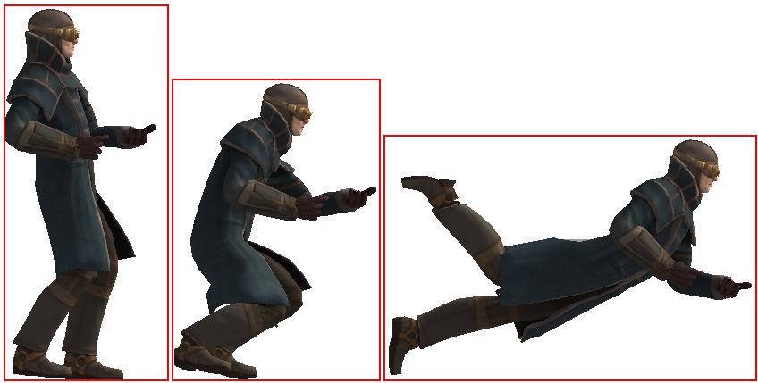
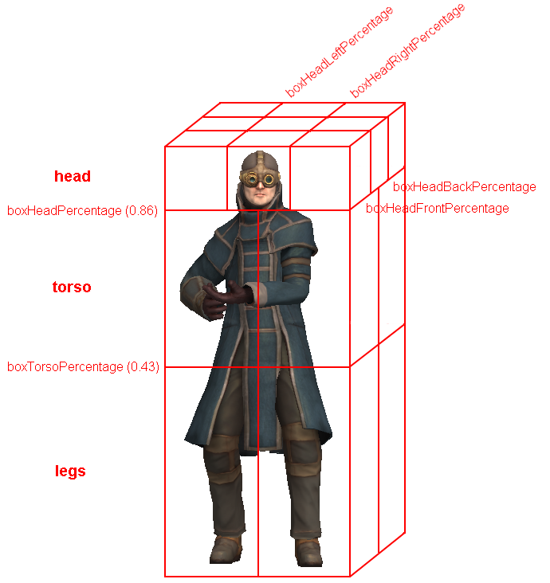

Detailed Description
A client-controlled player character.
The Player object is the main client-controlled object in an FPS, or indeed, any game where the user is in control of a single character. This class (and the associated datablock, PlayerData)
allows you to fine-tune the movement, collision detection, animation, and SFX properties of the character. Player derives from ShapeBase, so it is recommended to have a good understanding of that
class (and it's parent classes) as well.
Movement
The Player class supports the following modes of movement, known as poses:
-
Stand
-
Sprinting
-
Crouching
-
Prone
-
Swimming
The acceleration, maximum speed, and bounding box for each mode can be set independently using the PlayerData datablock. The player will automatically switch between swimming and one of the
other 4 'dry' modes when entering/exiting the water, but transitions between the non-swimming modes are handled by controller input (such as holding down a key to begin crouching). $mvTriggerCount3
activates crouching, while $mvTriggerCount4 activates being prone.
It is important to set the bounding box correctly for each mode so that collisions with the player remain accurate:

When the player changes pose a new PlayerData callback onPoseChange() is called. This is being used as Armor::onPoseChange() to modify an animation prefix used by ShapeBaseImageData to allow the
1st person arms to change their animation based on pose.
- Example:
function Armor::onPoseChange(%this, %obj, %oldPose, %newPose)
{
%obj.setImageScriptAnimPrefix( $WeaponSlot, addTaggedString(%newPose) );
}
Another feature is being able to lock out poses for the Player at any time. This is done with allowCrouch(), allowSprinting() etc. (there is even allowJumping() and allowJetJumping() which aren't
actually poses but states). So if for some game play reason the player should not be allowed to crouch right now, that may be disabled. All poses may be allowed with allowAllPoses() on the Player class.
The pose lock out mechanism is being used by the weapon script system -- see Weapon::onUse(). With this system, weapons can prevent the player from going into certain poses. This is used by the
deployable turret to lock out sprinting while the turret is the current weapon.
- Example:
function Weapon::onUse(%data, %obj)
{
if (%obj.getMountedImage($WeaponSlot) != %data.image.getId())
{
serverPlay3D(WeaponUseSound, %obj.getTransform());
%obj.mountImage(%data.image, $WeaponSlot);
if (%obj.client)
{
if (%data.description !$= "")
messageClient(%obj.client, 'MsgWeaponUsed', '\c0%1 selected.',
%data.description);
else
messageClient(%obj.client, 'MsgWeaponUsed', '\c0Weapon selected');
}
if (%obj.isInNamespaceHierarchy("Player"))
{
%obj.allowAllPoses();
%image = %data.image;
if (%image.jumpingDisallowed)
%obj.allowJumping(false);
if (%image.jetJumpingDisallowed)
%obj.allowJetJumping(false);
if (%image.sprintDisallowed)
%obj.allowSprinting(false);
if (%image.crouchDisallowed)
%obj.allowCrouching(false);
if (%image.proneDisallowed)
%obj.allowProne(false);
if (%image.swimmingDisallowed)
%obj.allowSwimming(false);
}
}
}
Sprinting
As mentioned above, sprinting is another pose for the Player class. It defines its own force and max speed in the three directions in PlayerData just like most poses,
such as crouch. It is activated using $mvTriggerCount5 by default which is often connected to Left Shift. When used this way you could treat it just like a standard run --
perhaps with the standard pose used for a walk in a RPG.
But sprinting is special in that you can control if a player's movement while sprinting should be constrained. You can place scale factors on strafing, yaw and pitch.
These force the player to move mostly in a straight line (or completely if you set them to 0) while sprinting by limiting their motion. You can also choose if the player
can jump while sprinting. This is all set up in PlayerData.
Just like other poses, you can define which sequences should be played on the player while sprinting. These sequences are:
-
sprint_root
-
sprint_forward
-
sprint_backward
-
sprint_side
-
sprint_right
However, if any of these sequences are not defined for the player, then the standard root, run, back, side and side_right sequences will be used. The idea here is that the
ground transform for these sequences will force them to play faster to give the appearance of sprinting. But if you want the player to do something different than just look
like they're running faster -- such as holding their weapon against their body -- then you'll want to make use of the sprint specific sequences.
Sprint also provides two PlayerData callbacks: onStartSprintMotion() and onStopSprintMotion(). The start callback is called when the player is in a sprint pose and starts
to move (i.e. presses the W key). The stop callback is called when either the player stops moving, or they stop sprinting. These could be used for anything, but by default
they are tied into the ShapeBaseImageData system. See Armor::onStartSprintMotion() and Armor::onStopSprintMotion(). With ShapeBaseImageData supporting four generic triggers
that may be used by a weapon's state machine to do something, the first one is triggered to allow weapons to enter a special sprint state that plays a sprint animation sequence
and locks out firing. However, you may choose to do something different.
Jumping
The Player class supports jumping. While the player is in contact with a surface (and optionally has enough energy as defined by the PlayerData), $mvTriggerCount2 will cause the player to jump.
Jetting
The Player class includes a simple jetpack behaviour allowing characters to 'jet' upwards while jumping. The jetting behaviour can be linked to the player's energy level using
datablock properties as shown below:
- Example:
datablock PlayerData( JetPlayer )
{
...
jetJumpForce = 16.0 * 90;
jetJumpEnergyDrain = 10;
jetMinJumpEnergy = 25;
jetMinJumpSpeed = 20;
jetMaxJumpSpeed = 100;
jetJumpSurfaceAngle = 78;
}
This player will not be able to jet if he has less than 25 units of energy, and 10 units will be subtracted each tick.
If PlayerData::jetJumpFore is greater than zero then $mvTriggerCount1 will activate jetting.
Falling and Landing
When the player is falling they transition into the "fall" sequence. This transition doesn't occur until the player has reached a particular speed -- you don't want the
fall sequence to kick in if they've just gone over a small bump. This speed threshold is set by the PlayerData fallingSpeedThreshold field. By default it is set to -10.0.
When the player lands there are two possible outcomes depending on how the player is set up. With the traditional method the "land" sequence has the player start from a
standing position and animates into a crouch. The playback speed of this sequence is scaled based on how hard the player hits the ground. Once the land sequence finishes
playing the player does a smooth transition back into the root pose (making them effectively stand up).
Starting with 1.2 there is a new method of handling landing. Here the "land" sequence starts with the player crouching on the ground and animates getting back up. This has
a look of the player hitting the ground from a fall and slowly standing back up. This new method is used when the PlayerData landSequenceTime field is given a value greater than
zero. This is the amount of time taken for the player to recover form the landing, and is also how long the land sequence will play for. As this has game play ramifications (the
player may have movement constraints when landing) this timing is controlled by the datablock field rather than just the length of time of the land sequence.
Also when using the new land sequence the PlayerData transitionToLand flag indicates if the player should smoothly transition between the fall sequence and the land sequence.
If set to false (the default) then there is no transition and the player appears to immediately go from falling to landing, which is usually the case when mirroring real life.
Air Control
The player may optionally move itself through the air while jumping or falling. This allows the player to adjust their trajectory while in the air, and is known as air control.
The PlayerData::airControl property determines what fraction of the player's normal speed they may move while in the air. By default, air control is disabled (set to 0).
Hard Impacts
When the player hits something hard it is possible to trigger an impact (such as handled by Armor::onImpact()). The PlayerData minImpactSpeed is the threshold at which falling
damage will be considered an impact. Any speed over this parameter will trigger an onImpact() call on the datablock. This allows for small falls to not cause any damage.
The PlayerData minLateralImpactSpeed is the threshold at which non-falling damage impacts will trigger the callback. This is separate from falling as you may not want a sprinting
player that hits a wall to get hurt, but being thrown into a wall by an explosion will.
Dismounting
It is possible to have the player mount another object, such as a vehicle, just like any other SceneObject. While mounted, $mvTriggerCount2 will cause the player to dismount.
Triggering a Mounted Object
A Player may have other objects mounted to it, with each mounted object assigned to a slot. These Player mounted objects are known as images. See ShapeBase::mountImage(). If there
is an image mounted to slot 0, $mvTriggerCount0 will trigger it. If the player dies this trigger is automatically released.
If there is an image mounted to slot 1, $mvTriggerCount1 will trigger it. Otherwise $mvTriggerCount1 will be passed along to the image in slot 0 as an alternate fire state.
Character model
The following sequences are used by the Player object to animate the character. Not all of them are required, but a model should have at least the root, run, back and side animations.
And please see the section on Sprinting above for how they are handled when not present.
- root
- Looping sequence played when player is standing but not moving.
- run
- Looping sequence played when player is running forward.
- back
- Looping sequence played when player is running backward.
- side
- Looping sequence played when player is running sideways (strafing). The sequence should depict the player moving left. If side_right is not present, this sequence will be played backwards in its place.
- side_right
Looping sequence played when player is running sideways right.
- sprint_root
- Looping sequence played when the player is stationary but in a sprinting mode. If not present then the root sequence is used.
- sprint_forward
- Looping sequence played when the player is sprinting and moving forward. If not present then the run sequence is used.
- sprint_backward
- Looping sequence played when the player is sprinting and moving backward. If not present then the back sequence is used.
- sprint_side
- Looping sequence played when the player is sprinting and moving sideways. The sequence should depict the player moving left. If crouch_right is not present, this sequence will be played backwards in its place. If not present then the side sequence is used.
- sprint_right
Looping sequence played when the player is sprinting and moving sideways. If not present then the side_right sequence is used.
- crouch_root
- Looping sequence played when player is crouched and not moving.
- crouch_forward
- Looping sequence played when player is crouched and moving forward.
- crouch_backward
- Looping sequence played when player is crouched and moving backward.
- crouch_side
- Looping sequence played when player is crouched and moving sideways. The sequence should depict the player moving left. If crouch_right is not present, this sequence will be played backwards in its place.
- crouch_right
Looping sequence played when player is crouched and moving sideways.
- prone_root
- Looping sequence played when player is prone (lying down) and not moving.
- prone_forward
- Looping sequence played when player is prone (lying down) and moving forward.
- prone_backward
Looping sequence played when player is prone (lying down) and moving backward.
- swim_root
- Looping sequence played when player is swimming and not moving.
- swim_forward
- Looping sequence played when player is swimming and moving forward.
- swim_backward
- Looping sequence played when player is swimming and moving backward.
- swim_left
- Looping sequence played when player is swimming and moving left. The sequence should depict the player moving left. If swim_right is not present, this sequence will be played backwards in its place.
- swim_right
Looping sequence played when player is swimming and moving right.
- fall
- Sequence played when player is falling.
- jump
- Sequence played when player has jumped while moving.
- standjump
- Sequence played when player has jumped from a standing start.
- land
- Sequence played when player lands after falling.
- jet
Looping sequence played when player is jetting.
- head
- Sequence to control vertical head movement (for looking) (start=full up, end=full down).
- headside
- Sequence to control horizontal head movement (for looking) (start=full left, end=full right).
- look
Sequence to control vertical arm movement (for looking) (start=full up, end=full down).
- light_recoil
- Sequence played when the player is firing a light weapon. (Based on ShapeBaseImageData)
- medium_recoil
- Sequence played when player is firing a medium weapon. (Based on ShapeBaseImageData)
- heavy_recoil
Sequence played when player is firing a heavy weapon (Based on ShapeBaseImageData).
- deathN
- Sequence played when player has been killed (a random one of these will play). N is an integer from 1 to 11.
Mounted Image Controlled 3rd Person Animation
A player's 3rd person action animation sequence selection may be modified based on what images are mounted on the player. When mounting a ShapeBaseImageData, the image's
imageAnimPrefix field is used to control this. If this is left blank (the default) then nothing happens to the 3rd person player -- all of the sequences play as defined. If
it is filled with some text (best to keep it to letters and numbers, with no spaces) then that text is added to the action animation sequence name and looked up on the player
shape. For example:
A rifle ShapeBaseImageData is mounted to the player in slot 0. The rifle's datablock doesn't have an imageAnimPrefix defined, so the 3rd person player will use the standard
action animation sequence names. i.e. "root", "run", "back", "crouch_root", etc.
Now a pistol ShapeBaseImageData is mounted to the player in slot 0. The pistol's datablock has imageAnimPrefix = "pistol". Now the "pistol_" (underscore is added by the system)
prefix is added to each of the action animation sequence names when looking up what to play on the player's shape. So the Player class will look for "pistol_root", "pistol_run",
"pistol_back", "pistol_crouch_root", etc. If any of these new prefixed names are not found on the player's shape, then we fall back to the standard action animation sequence names,
such as "root", "run", etc.
In all of our T3D examples the player only mounts a single image. But Torque allows up to four images to be mounted at a time. When more than one image is mounted then the engine
adds all of the prefixes together when searching for the action animation sequence name. If that combined name is not found then the engine starts removing prefixes starting with the
highest slot down to the lowest slot. For example, if a player is holding a sword (slot 0) and a shield (slot 1) in each hand that are mounted as separate images (and with
imageAnimPrefix's of "sword" and "shield" respectively), then the engine will search for the following names while the player is just standing there:
-
shield_sword_root
-
sword_root
-
root
The first one that is found in the above order will be used.
Another example: If the player has a jet pack (slot 3 with a prefix of "jetpack") and two pistols being used akimbo style (slots 1 and 0, both with a prefix of "laserpistol")
with slot 2 left open for a helmet (which is skipped as it doesn't have a prefix), then the following search order would be used:
-
jetpack_laserpistol_laserpistol_root
-
laserpistol_laserpistol_root
-
laserpistol_root
-
root
Again, the first one that is found is used.
A player's 3rd person animation may also be modified by the weapon being used. In T3D 1.1 there are the three recoil sequences that may be triggered on the 3rd person player by
the weapon's state. Starting with T3D 1.2 this becomes more generic (while still supporting the existing recoil sequence). When a ShapeBaseImageData state defines a
stateShapeSequence, that sequence may be played on the player's shape (the new PlayerData allowImageStateAnimation field must be set to "true" as well). The new ShapeBaseImageData
state stateScaleShapeSequence flag may also be used to indicate if this player animation sequence should have its playback rate scaled to the length of the image's state.
What exactly happens on the player depends on what else has been defined. First, there is the sequence name as passed in from the image. Then there is also the imageAnimPrefix
as defined by the image. Finally, there is the generic script defined prefix that may be added with ShapeBase::setImageScriptAnimPrefix() -- we're using this to pass along the
current pose, but it could be used for anything. Time for an example. We want to throw a grenade that we're holding (mounted in slot 0). The weapon's state that does this has
stateShapeSequence set to "throw". The grenade image itself has an imageAnimPrefix defined as "fraggrenade". Finally, the player is crouching, so Armor::onPoseChange() sets the
script prefix to "crouch". The final search order goes like this:
-
fraggrenade_crouch_throw
-
fraggrenade_throw
-
crouch_throw
-
throw
The first of those sequences that is found is played as a new thread on the 3rd person player. As with recoil, only one of these 3rd person animation threads may be active at a time.
If an image in another slot also asks to play a 3rd person sequence, the most recent request is what will play.
1st Person Arms
Games that have the player hold a weapon in a 1st person view often let you see the player's arms and hands holding that weapon. Rather than requiring you to build the art for all possible
combinations of character arms and weapons, T3D allows you to mix and match shapes and animation sequences.
1st person arms are an optional client-side only effect and are not used on the server. The arms are a separate shape from the normal 3rd person player shape. You reference the arms using
the PlayerData "shapeNameFP" array. It is an array as we support up to four mounted images therefore we support up to four arm shapes. However, for T3D 1.2 our examples only make use of a single
set of arms for the first mounting slot as our example soldier holds a single weapon at a time.
As the arms are just regular DAE/DTS files they may get their animation sequences from anywhere. For the included 1.2 art path (see the soldier in the template projects) we decided that their
sequences should come from the weapons themselves. This means that the weapons include all of the bones/nodes needed to animate the arms, but none of the arm geometry. If you take a look at
art/shapes/actors/Soldier/FP/FP_SoldierArms.cs you'll see the external animation sequence references for each of the possible weapons.
As each weapon may require its own set of animation sequences (i.e. a different idle sequence for a pistol vs. a rifle) starting with T3D 1.2 a new ShapeBaseImageData field now exists:
imagePrefixFP. If this field is defined for the mounted image then it is added to the sequence name as given in the current weapon state in the form of "prefix_sequence" (the underscore is
added by the system). For example, the Lurker rifle has an imagePrefixFP of "Rifle". The Lurker's Ready state calls the idle sequence, so the arms will attempt to play the "Rifle_idle" sequence
and if not found, they will play the "idle" sequence.
The advantage of having the prefix defined within the datablock and not making it part of the sequence names referenced directly in the weapon state machine is that you can do something like this:
- Example:
datablock ShapeBaseImageData(Pistol1Image)
{
imageAnimPrefixFP = "Pistol1";
...other data here...
...weapon state machine here...
};
datablock ShapeBaseImageData(Pistol2Image : Pistol1Image)
{
imageAnimPrefixFP = "Pistol2";
};
You could define a new pistol (Pistol2Image) that uses the exact same state machine as Pistol1Image, but could use a slightly different set of animation sequences with a prefix of "Pistol2".
As was previously discussed with 3rd person animation above, a script-based modifier may also be added when looking up the sequence name for the arms. This is currently used to pass along the player's pose so the arm's idle sequence could have a swimming motion when in the swim pose, for example. And as with images, the arms sequence name look up uses the following order to find a sequence to play, with the first one found being used:
-
ShapeBaseImageDataPrefix_ScriptPrefix_WeaponStateSequence
-
ShapeBaseImageDataPrefix_WeaponStateSequence
-
ScriptPrefix_WeaponStateSequence
-
WeaponStateSequence
Finally, the arms support an "ambient" sequence that may be used for anything and will always play, if it is defined in the arm's shape.
Example PlayerData Datablock
An example of a player datablock appears below:
- Example:
datablock PlayerData(DefaultPlayerData)
{
renderFirstPerson = false;
computeCRC = false;
shapeFile = "art/shapes/actors/Soldier/soldier_rigged.dae";
cameraMaxDist = 3;
allowImageStateAnimation = true;
imageAnimPrefixFP = "soldier";
shapeNameFP[0] = "art/shapes/actors/Soldier/FP/FP_SoldierArms.DAE";
canObserve = 1;
cmdCategory = "Clients";
cameraDefaultFov = 55.0;
cameraMinFov = 5.0;
cameraMaxFov = 65.0;
debrisShapeName = "art/shapes/actors/common/debris_player.dts";
debris = playerDebris;
throwForce = 30;
aiAvoidThis = 1;
minLookAngle = "-1.2";
maxLookAngle = "1.2";
maxFreelookAngle = 3.0;
mass = 120;
drag = 1.3;
maxdrag = 0.4;
density = 1.1;
maxDamage = 100;
maxEnergy = 60;
repairRate = 0.33;
energyPerDamagePoint = 75;
rechargeRate = 0.256;
runForce = 4320;
runEnergyDrain = 0;
minRunEnergy = 0;
maxForwardSpeed = 8;
maxBackwardSpeed = 6;
maxSideSpeed = 6;
sprintForce = 4320;
sprintEnergyDrain = 0;
minSprintEnergy = 0;
maxSprintForwardSpeed = 14;
maxSprintBackwardSpeed = 8;
maxSprintSideSpeed = 6;
sprintStrafeScale = 0.25;
sprintYawScale = 0.05;
sprintPitchScale = 0.05;
sprintCanJump = true;
crouchForce = 405;
maxCrouchForwardSpeed = 4.0;
maxCrouchBackwardSpeed = 2.0;
maxCrouchSideSpeed = 2.0;
maxUnderwaterForwardSpeed = 8.4;
maxUnderwaterBackwardSpeed = 7.8;
maxUnderwaterSideSpeed = 7.8;
jumpForce = "747";
jumpEnergyDrain = 0;
minJumpEnergy = 0;
jumpDelay = "15";
airControl = 0.3;
fallingSpeedThreshold = -6.0;
landSequenceTime = 0.33;
transitionToLand = false;
recoverDelay = 0;
recoverRunForceScale = 0;
minImpactSpeed = 10;
minLateralImpactSpeed = 20;
speedDamageScale = 0.4;
boundingBox = "0.65 0.75 1.85";
crouchBoundingBox = "0.65 0.75 1.3";
swimBoundingBox = "1 2 2";
pickupRadius = 1;
boxHeadPercentage = 0.83;
boxTorsoPercentage = 0.49;
boxHeadLeftPercentage = 0.30;
boxHeadRightPercentage = 0.60;
boxHeadBackPercentage = 0.30;
boxHeadFrontPercentage = 0.60;
decalOffset = 0.25;
footPuffEmitter = "LightPuffEmitter";
footPuffNumParts = 10;
footPuffRadius = "0.25";
dustEmitter = "LightPuffEmitter";
splash = PlayerSplash;
splashVelocity = 4.0;
splashAngle = 67.0;
splashFreqMod = 300.0;
splashVelEpsilon = 0.60;
bubbleEmitTime = 0.4;
splashEmitter[0] = PlayerWakeEmitter;
splashEmitter[1] = PlayerFoamEmitter;
splashEmitter[2] = PlayerBubbleEmitter;
mediumSplashSoundVelocity = 10.0;
hardSplashSoundVelocity = 20.0;
exitSplashSoundVelocity = 5.0;
runSurfaceAngle = 38;
jumpSurfaceAngle = 80;
maxStepHeight = 0.35;
minJumpSpeed = 20;
maxJumpSpeed = 30;
horizMaxSpeed = 68;
horizResistSpeed = 33;
horizResistFactor = 0.35;
upMaxSpeed = 80;
upResistSpeed = 25;
upResistFactor = 0.3;
footstepSplashHeight = 0.35;
FootSoftSound = FootLightSoftSound;
FootHardSound = FootLightHardSound;
FootMetalSound = FootLightMetalSound;
FootSnowSound = FootLightSnowSound;
FootShallowSound = FootLightShallowSplashSound;
FootWadingSound = FootLightWadingSound;
FootUnderwaterSound = FootLightUnderwaterSound;
FootBubblesSound = FootLightBubblesSound;
movingBubblesSound = ArmorMoveBubblesSound;
waterBreathSound = WaterBreathMaleSound;
impactSoftSound = ImpactLightSoftSound;
impactHardSound = ImpactLightHardSound;
impactMetalSound = ImpactLightMetalSound;
impactSnowSound = ImpactLightSnowSound;
impactWaterEasy = ImpactLightWaterEasySound;
impactWaterMedium = ImpactLightWaterMediumSound;
impactWaterHard = ImpactLightWaterHardSound;
groundImpactMinSpeed = "45";
groundImpactShakeFreq = "4.0 4.0 4.0";
groundImpactShakeAmp = "1.0 1.0 1.0";
groundImpactShakeDuration = 0.8;
groundImpactShakeFalloff = 10.0;
exitingWater = ExitingWaterLightSound;
observeParameters = "0.5 4.5 4.5";
class = "armor";
cameraMinDist = "0";
DecalData = "PlayerFootprint";
mainWeapon = Lurker;
maxInv[Lurker] = 1;
maxInv[LurkerClip] = 20;
maxInv[LurkerGrenadeLauncher] = 1;
maxInv[LurkerGrenadeAmmo] = 20;
maxInv[Ryder] = 1;
maxInv[RyderClip] = 10;
maxInv[ProxMine] = 5;
maxInv[DeployableTurret] = 5;
availableSkins = "base DarkBlue DarkGreen LightGreen Orange Red Teal
Violet Yellow";
};
Member Function Documentation
| void Player::allowAllPoses |
( |
|
) |
|
Allow all poses a chance to occur.
This method resets any poses that have manually been blocked from occuring. This includes the regular pose states such as sprinting, crouch, being prone and swimming. It also includes being able to jump and jet jump. While this is allowing these poses to occur it doesn't mean that they all can due to other conditions. We're just not manually blocking them from being allowed.
| void Player::allowCrouching |
( |
bool |
state |
) |
|
Set if the Player is allowed to crouch.
The default is to allow crouching unless there are other environmental concerns that prevent it. This method is mainly used to explicitly disallow crouching at any time.
- Parameters:
-
| state | Set to true to allow crouching, false to disable it. |
| void Player::allowJetJumping |
( |
bool |
state |
) |
|
Set if the Player is allowed to jet jump.
The default is to allow jet jumping unless there are other environmental concerns that prevent it. This method is mainly used to explicitly disallow jet jumping at any time.
- Parameters:
-
| state | Set to true to allow jet jumping, false to disable it. |
| void Player::allowJumping |
( |
bool |
state |
) |
|
Set if the Player is allowed to jump.
The default is to allow jumping unless there are other environmental concerns that prevent it. This method is mainly used to explicitly disallow jumping at any time.
- Parameters:
-
| state | Set to true to allow jumping, false to disable it. |
| void Player::allowProne |
( |
bool |
state |
) |
|
Set if the Player is allowed to go prone.
The default is to allow being prone unless there are other environmental concerns that prevent it. This method is mainly used to explicitly disallow going prone at any time.
- Parameters:
-
| state | Set to true to allow being prone, false to disable it. |
| void Player::allowSprinting |
( |
bool |
state |
) |
|
Set if the Player is allowed to sprint.
The default is to allow sprinting unless there are other environmental concerns that prevent it. This method is mainly used to explicitly disallow sprinting at any time.
- Parameters:
-
| state | Set to true to allow sprinting, false to disable it. |
| void Player::allowSwimming |
( |
bool |
state |
) |
|
Set if the Player is allowed to swim.
The default is to allow swimming unless there are other environmental concerns that prevent it. This method is mainly used to explicitly disallow swimming at any time.
- Parameters:
-
| state | Set to true to allow swimming, false to disable it. |
| bool Player::checkDismountPoint |
( |
Point3F |
oldPos, |
|
|
Point3F |
pos | |
|
) |
| | |
Check if it is safe to dismount at this position.
Internally this method casts a ray from oldPos to pos to determine if it hits the terrain, an interior object, a water object, another player, a static shape, a vehicle
(exluding the one currently mounted), or physical zone. If this ray is in the clear, then the player's bounding box is also checked for a collision at the pos position. If
this displaced bounding box is also in the clear, then checkDismountPoint() returns true.
- Parameters:
-
| oldPos | The player's current position |
| pos | The dismount position to check |
- Returns:
- True if the dismount position is clear, false if not
- Note:
- The player must be already mounted for this method to not assert.
| void Player::clearControlObject |
( |
|
) |
|
Clears the player's current control object.
Returns control to the player. This internally calls Player::setControlObject(0).
- Example:
%player.clearControlObject();
echo(%player.getControlObject());
%player.setControlObject(%vehicle);
echo(%player.getControlObject());
- Note:
- If the player does not have a control object, the player will receive all moves from its GameConnection. If you're looking to
remove control from the player itself (i.e. stop sending moves to the player) use GameConnection::setControlObject() to transfer control to another object, such as a camera.
| int Player::getControlObject |
( |
|
) |
|
Get the current object we are controlling.
- Returns:
- ID of the ShapeBase object we control, or 0 if not controlling an object.
| string Player::getDamageLocation |
( |
Point3F |
pos |
) |
|
Get the named damage location and modifier for a given world position.
the Player object can simulate different hit locations based on a pre-defined set of PlayerData defined percentages. These hit percentages divide up the Player's bounding
box into different regions. The diagram below demonstrates how the various PlayerData properties split up the bounding volume:

While you may pass in any world position and getDamageLocation() will provide a best-fit location, you should be aware that this can produce some interesting results. For example,
any position that is above PlayerData::boxHeadPercentage will be considered a 'head' hit, even if the world position is high in the sky. Therefore it may be wise to keep the passed in
point to somewhere on the surface of, or within, the Player's bounding volume.
- Note:
- This method will not return an accurate location when the player is prone or swimming.
- Parameters:
-
| pos | A world position for which to retrieve a body region on this player. |
- Returns:
- a string containing two words (space separated strings), where the first is a location and the second is a modifier.
Posible locations:
Head modifiers:
-
left_back
-
middle_back
-
right_back
-
left_middle
-
middle_middle
-
right_middle
-
left_front
-
middle_front
-
right_front
Legs/Torso modifiers:
-
front_left
-
front_right
-
back_left
-
back_right
| int Player::getNumDeathAnimations |
( |
|
) |
|
Get the number of death animations available to this player.
Death animations are assumed to be named death1-N using consecutive indices.
| string Player::getPose |
( |
|
) |
|
Get the name of the player's current pose.
The pose is one of the following:
-
Stand - Standard movement pose.
-
Sprint - Sprinting pose.
-
Crouch - Crouch pose.
-
Prone - Prone pose.
-
Swim - Swimming pose.
- Returns:
- The current pose; one of: "Stand", "Sprint", "Crouch", "Prone", "Swim"
| string Player::getState |
( |
|
) |
|
Get the name of the player's current state.
The state is one of the following:
-
Dead - The Player is dead.
-
Mounted - The Player is mounted to an object such as a vehicle.
-
Move - The Player is free to move. The usual state.
-
Recover - The Player is recovering from a fall. See PlayerData::recoverDelay.
- Returns:
- The current state; one of: "Dead", "Mounted", "Move", "Recover"
| bool Player::setActionThread |
( |
string |
name, |
|
|
bool |
hold = false, |
|
|
bool |
fsp = true | |
|
) |
| | |
Set the main action sequence to play for this player.
- Parameters:
-
| name | Name of the action sequence to set |
| hold | Set to false to get a callback on the datablock when the sequence ends (PlayerData::animationDone()). When
set to true no callback is made. |
| fsp | True if first person and none of the spine nodes in the shape should animate. False will allow the shape's
spine nodes to animate. |
- Returns:
- True if succesful, false if failed
- Note:
- The spine nodes for the Player's shape are named as follows:
-
Bip01 Pelvis
-
Bip01 Spine
-
Bip01 Spine1
-
Bip01 Spine2
-
Bip01 Neck
-
Bip01 Head
You cannot use setActionThread() to have the Player play one of the motion determined action animation sequences. These sequences are chosen based on how the Player moves
and the Player's current pose. The names of these sequences are:
-
root
-
run
-
side
-
side_right
-
crouch_root
-
crouch_forward
-
crouch_backward
-
crouch_side
-
crouch_right
-
prone_root
-
prone_forward
-
prone_backward
-
swim_root
-
swim_forward
-
swim_backward
-
swim_left
-
swim_right
-
fall
-
jump
-
standjump
-
land
-
jet
If the player moves in any direction then the animation sequence set using this method will be cancelled and the chosen mation-based sequence will take over. This makes great for times when the Player cannot move, such as when mounted, or when it doesn't matter if the action sequence changes, such as waving and saluting.
- Example:
%player.setActionThread( "sitting", true, true );
| bool Player::setArmThread |
( |
string |
name |
) |
|
Set the sequence that controls the player's arms (dynamically adjusted to match look direction).
- Parameters:
-
| name | Name of the sequence to play on the player's arms. |
- Returns:
- true if successful, false if failed.
- Note:
- By default the 'look' sequence is used, if available.
| bool Player::setControlObject |
( |
ShapeBase |
obj |
) |
|
Set the object to be controlled by this player.
It is possible to have the moves sent to the Player object from the GameConnection to be passed along to another object. This happens, for example when a player is mounted to a vehicle.
The move commands pass through the Player and on to the vehicle (while the player remains stationary within the vehicle). With setControlObject() you can have the Player pass along its moves
to any object. One possible use is for a player to move a remote controlled vehicle. In this case the player does not mount the vehicle directly, but still wants to be able to control it.
- Parameters:
-
| obj | Object to control with this player |
- Returns:
- True if the object is valid, false if not
Member Data Documentation
int Player::crouchTrigger [static] |
The move trigger index used for player crouching.
int Player::imageTrigger0 [static] |
The move trigger index used to trigger mounted image 0.
int Player::imageTrigger1 [static] |
The move trigger index used to trigger mounted image 1 or alternate fire on mounted image 0.
int Player::jumpJetTrigger [static] |
The move trigger index used for player jump jetting.
int Player::jumpTrigger [static] |
The move trigger index used for player jumping.
float Player::maxImpulseVelocity [static] |
The maximum velocity allowed due to a single impulse.
int Player::maxPredictionTicks [static] |
Maximum number of ticks to predict on the client from the last known move obtained from the server.
int Player::maxWarpTicks [static] |
When a warp needs to occur due to the client being too far off from the server, this is the maximum number of ticks we'll allow the client to warp to catch up.
float Player::minWarpTicks [static] |
Fraction of tick at which instant warp occures on the client.
int Player::proneTrigger [static] |
The move trigger index used for player prone pose.
bool Player::renderCollision [static] |
Determines if the player's collision mesh should be rendered.
This is mainly used for the tools and debugging.
bool Player::renderMyItems [static] |
Determines if mounted shapes are rendered or not.
Used on the client side to disable the rendering of all Player mounted objects. This is mainly used for the tools or debugging.
bool Player::renderMyPlayer [static] |
Determines if the player is rendered or not.
Used on the client side to disable the rendering of all Player objects. This is mainly for the tools or debugging.
int Player::sprintTrigger [static] |
The move trigger index used for player sprinting.
int Player::vehicleDismountTrigger [static] |
The move trigger index used to dismount player.